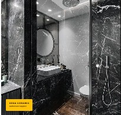

QUALITY YOU CAN TRUST
Premium finishes selected for lasting performance and style.
Experience the excellence of authentic Twyford & Keda ceramics.
Kenya's most reliable source for high-end floor and wall finishes.
Explore selected Twyford and Keda tiles, epoxy flooring and bathroom finishing products available in Kenya.
Premium finishes selected for lasting performance and style.
Practical guidance to help you choose the right finish.
Competitive pricing with dependable product availability.
Professional support from selection through delivery.

Twyford Kenya brings quality tiles and finishing solutions to homes and commercial spaces. We combine premium products, practical advice and dependable service.
Premium finishes delivered where you need them.